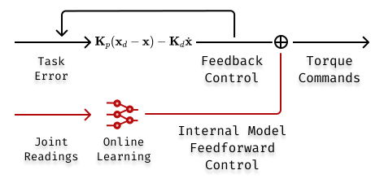
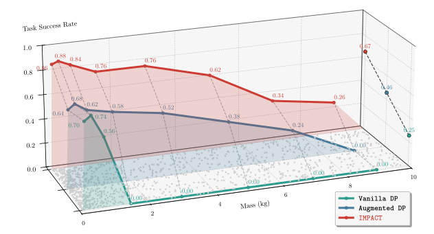

1 Harvard University2 Stanford University3 Tsinghua University
Scroll
At A Glance
What Is New
We introduce IMPACT, a framework designed for forceful robotic manipulation tasks.
By learning an internal model of environment dynamics and contact interactions online, IMPACT utilizes feedforward control alongside an imitation learning policy.
This architecture is directly inspired by—and closely parallels—the mechanisms found in the human cerebellum.
Why It Matters
Everyday household tasks often involve significant interaction forces.
To finish the tasks successfully, imitation learning policies must adapt to varying contact dynamics—such as adjusting vertical lift force to compensate for an object's weight.
Our research shows that vanilla imitation learning with impedance control fails to generalize to these gravitational loads, leading to task failure even as training data scales.
Takeaway Messages
Simply scaling up data within a vanilla imitation learning framework is insufficient for tasks requiring sustained contact and force modulation.
IMPACT provides a robust alternative, serving as a specialized framework for complex, force-sensitive manipulation tasks where traditional methods struggle to adapt and generalize..
Overview
Methods
The core idea of IMPACT is to combine an imitation learning policy with an online-updated internal model of environment dynamics and contact forces.
Consider the case when we want the robots to handle objects of varying weights.
To compensate for the object gravity, the policy will need to learn to overshoot in z direction during the lift phase, as illustrated in Fig 1.
Experiments shows that this vanilla appraoch fail to adapt and achieve successful task completion, even with more training data.
In contrast, we propose to decouple
Fig 1. Overview of IMPACT and comparison with implicit force control method. (a) In implicit force control, forces are generated implicitly by the policy through producing virtual target trajectories that induce tracking errors, which are converted into interaction forces by a low-level impedance controller. (b) In IMPACT, the controller generates desired interaction forces: an internal model predicts contact and payload-induced forces and compensates via feedforward torque commands.
The control diagram.

Fig 3. Diagram of interaction behavior and control response.
Results
The results highlight stronger robustness in force-sensitive scenarios where vanilla imitation learning with impedance control struggles. IMPACT maintains better task completion under shifts in interaction force and gravitational load.

Fig 2. Results and qualitative analysis.
IMPACT Generalize
Safe
Calligraphy Large
Calligraphy Small
Demos
Compressed web-ready demos for fast loading and playback.